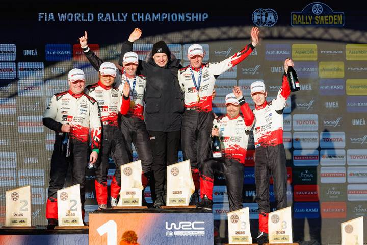
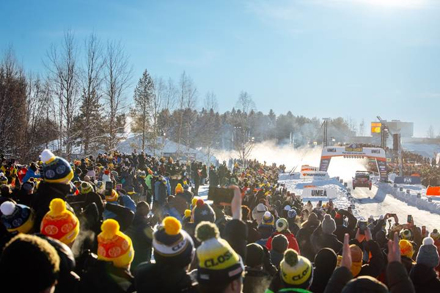

Elfyn Evans y su copiloto Scott Martin se aseguraron la victoria en el Rally de Suecia, liderando un notable 1-2-3-4 de Toyota Gazoo Racing y situándose en lo más alto de la clasificación del WRC.
Tras el triplete conseguido el mes pasado en el Rally de Montecarlo, esta es la primera vez que un fabricante ocupa los tres puestos del podio en dos pruebas consecutivas del WRC desde que Citroën lo hiciera en 2010. La última vez que se logró esta hazaña en las dos primeras pruebas de una temporada fue en 1984, cuando Audi lo consiguió en Montecarlo y Suecia.

Este es el segundo año consecutivo en que Evans y su copiloto Scott Martin ganan el único rally puramente invernal del WRC y su tercer triunfo en Suecia en total. Esto convierte al galés Evans en uno de los pilotos más exitosos del rally de nieve, ya que iguala el número de victorias logradas por su compañero de equipo Sébastien Ogier, así como por Kenneth Eriksson y Tommi Mäkinen.
Así es como la máquina bien aceitada del equipo Gazoo Racing finalizaba el último día del rally de la nieve, demostrando una superioridad técnica indiscutible sobre sus competidores.

CLASIFICACIÓN FINAL PROVISIONAL, RALLY DE SUECIA
| 1 | Elfyn Evans/Scott Martin (Toyota GR YARIS Rally1) | 2h35m53.1s |
| 2 | Takamoto Katsuta/Aaron Johnston (Toyota GR YARIS Rally1) | +14.3s |
| 3 | Sami Pajari/Marko Salminen (Toyota GR YARIS Rally1) | +46.0s |
| 4 | Oliver Solberg/Elliott Edmondson (Toyota GR YARIS Rally1) | +1m11.6s |
| 5 | Adrien Fourmaux/Alexandre Coria (Hyundai i20 N Rally1) | +1m50.3s |
| 6 | Esapekka Lappi/Enni Mälkönen (Hyundai i20 N Rally1) | +1m53.2s |
| 7 | Thierry Neuville/Martijn Wydaeghe (Hyundai i20 N Rally1) | +3m45.9s |
| 8 | Jon Armstrong/Shane Byrne (Ford Puma Rally1) | +4m05.5s |
| 9 | Josh McErlean/Eoin Treacy (Ford Puma Rally1) | +6m05.4s |
| 10 | Roope Korhonen/Anssi Viinikka (Toyota GR Yaris Rally2) | +10m36.2s |
Fuente: WRC.com / Toyota Gazoo Racing